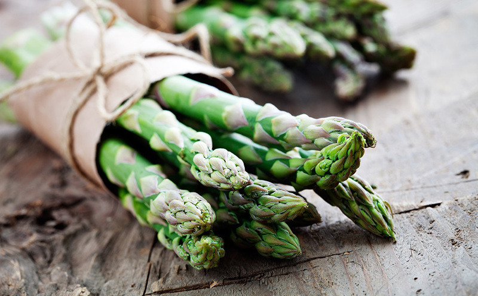

Our Story
We started out with a quest for fresh game prepared in a delicate and natural way. It all began when our founder Emma Wilson came up with the idea that a great place to eat shouldn't be hard to find or hard to enjoy. Our deli fish is freshly caught under special laws and we work directly with animal protection and local farmers. We hope you enjoy the food from our kitchen to your plate.
EST. 2004
